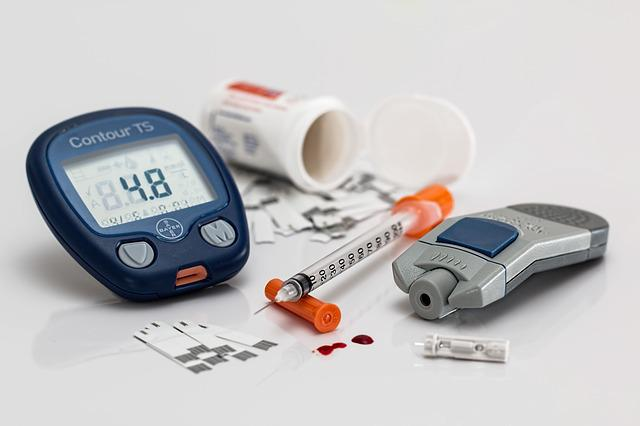

<div class="content">
  <section class="description">
    <h1>Diabetes Mellitus</h1>

    <div class="wrapper">
      <p>
        Atualmente 6,9% da população nacional possuí Diabetes, é uma doença
        silenciosa, seus sintomas facilmente se confundem com um simples
        mal-estar. Mas se você que possui um histórico familiar com essa doença,
        é idoso, ou possui outras comorbidades, deve se prevenir, e fazer seu
        acompanhamento médico. O tratamento do paciente Diabético inclui medidas
        medicamentosas e não medicamentosas, visando estabelecer o equilíbrio da
        insulina em seu metabolismo.
      </p>

      
    </div>
  </section>
</div>
